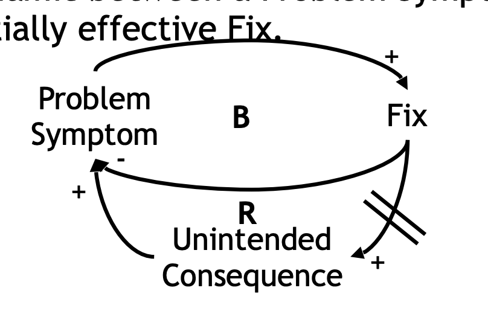
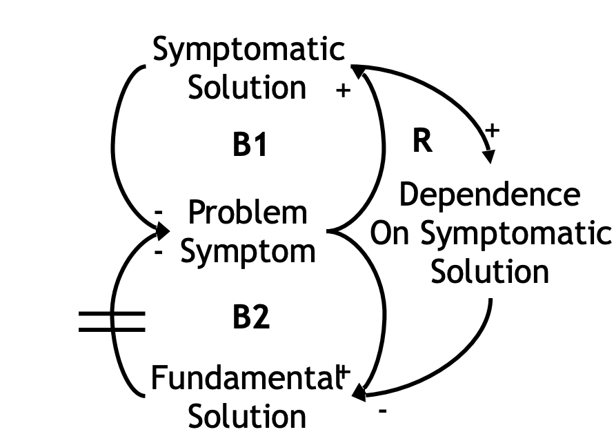
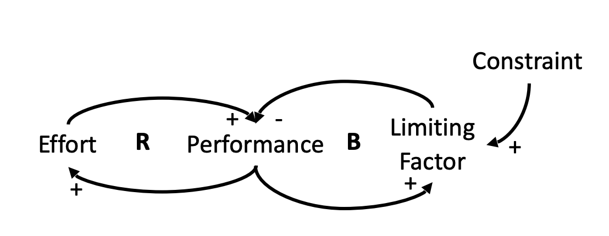
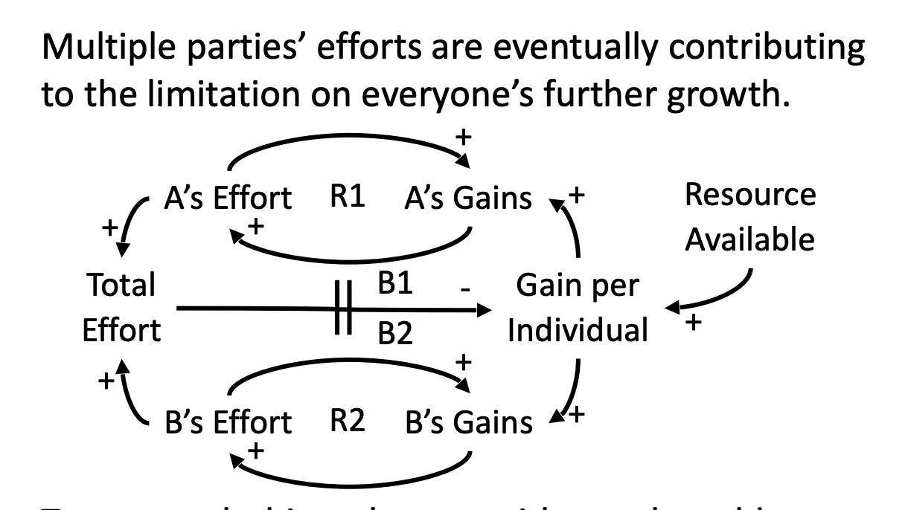
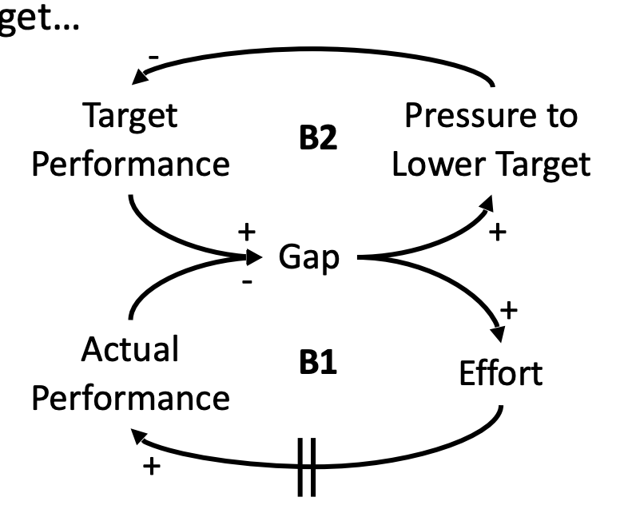
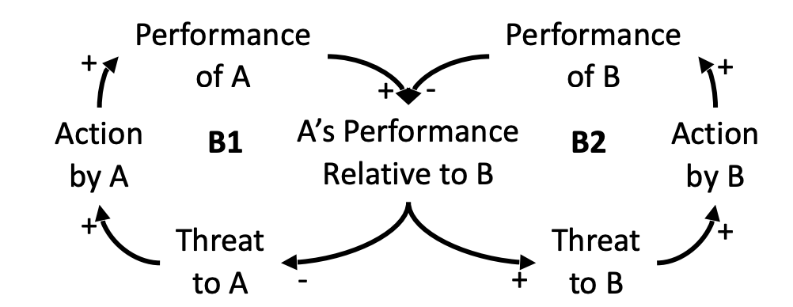
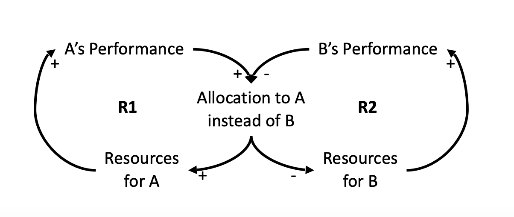
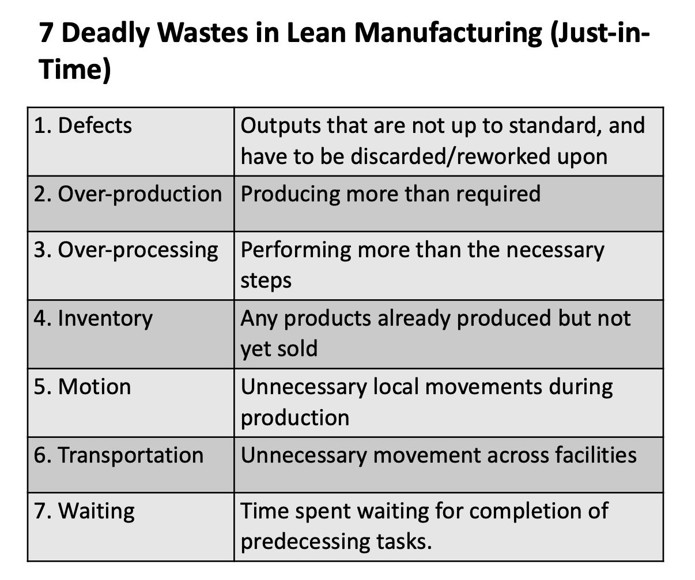
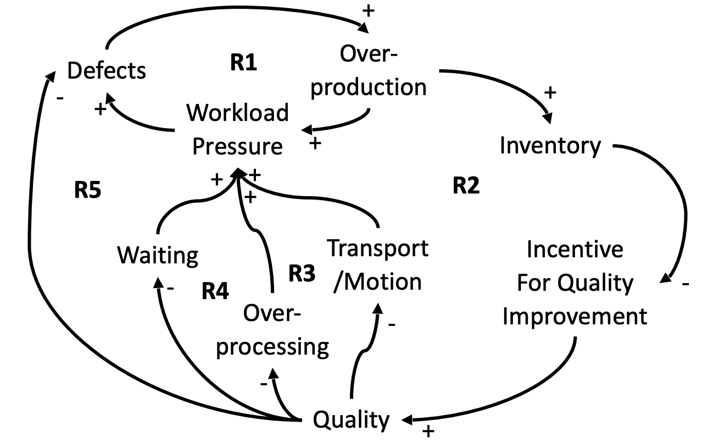
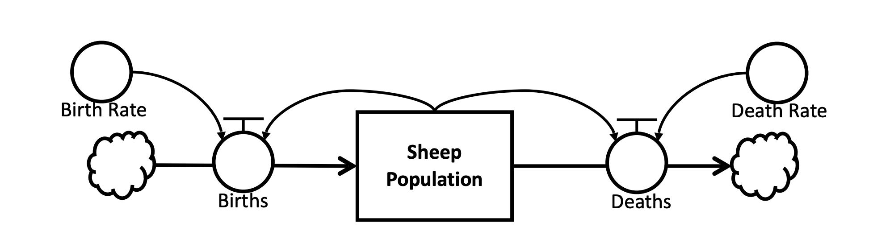

System Definition
System: A group of interacting, interrelated, or interdependent parts that form a complex and unified whole that has a specific purpose.
Dynamics: How things change over time.
Systems Thinking and System Dynamics
- Systems Thinking and System Dynamics is about understanding how “Systems” behave.
- We construct models to:
- describe the behaviour of systems,
- Simulate outcomes of such combined behaviour over time to support decision-making.
Such decisions are for problem solving and improvements of systems.
CLD (causal loop diagram)
Deciding the dynamic of the loop (R/B)
Two ways to decide the dynamic:
Go through the loop at least twice and see if the variables are always going in the same direction, loop after loop.
When Sheep Population is large, more Wolf Attacks happened. This results in more Real Cries, which causes more Villagers’ Rescue. Less Sheep will be killed, thus the Sheep Population can keep on prospering. This leads to even more Wolf Attacks, more Real Cries… Looks like all variables are being reinforced.Count the number of negative polarities (-). With 2 -‘s in this loop (an even number), they cancel each other out, which makes this loop a Reinforcing loop.
Systems Methodology
- Use this method to investigate common problem SYMPTOMS, to review the underlying dynamics and structures, and to develop sustainable fundamental solutions.
Four-level thinking:
- The Events - The symptoms of problems. They are easy to spot, and easy to solve, but solving them does not fully address the problems.
- The Patterns and Trends - The factors and dynamics that results in the problem symptom, to be described by Behaviour over Time (BoT) Graphs. This level is covered by the water, that means they are harder to see and to understand. Knowing about these factors and dynamics, and how they have behaved over the recent period can help with understanding the underlying structure of the problem.
- The Structure - Once we understand the Patterns and Trends, we can develop and describe the structure of the problem, by constructing Causal Loop Diagrams (CLDs) and/or Stock and Flow simulation models. With such models, a decision maker can simulate and predict likely outcomes of changes that happen in the structure. For example, what are the likely results if a parent punishes his child more? In the short term? In the long term?
- Leverages - Having a good understanding about the underlying structure and dynamics of the problem, fundamental solutions can be derived by utilising such dynamics. This is the main purpose of the Systems Methodology.
System Archetypes
Fixes that fail
- This archetype features a common phenomenon, where an effective solution to a problem started to worsen the problem situation, due to an unintended consequence (side-effect).
- Featuring two loops: the balancing dynamic between symptom and an initially effective fix; a reinforcing loop between the quick fix, an unintended consequence, and the symptom.
The behaviour/hatred example:
- Problem Symptom: Behaviour
- Fix: Smacking
- Unintended Consequence: Hatred
- When Delays Happen: Between Hatred and Behaviour (accumulation of Hatred until the threshold is breached)
My lose weight example:
- Problem Symptom: Gap between actual body weight and desired body weight
- Fix: Reduction on food intake
- Unintended Consequence: Binged Eating
- When Delays Happen: Between desire to eat and binged Eating (the desire to eat grows until it overwhelms my self discipline).
See my lose weight CLD and BoT here
Shifting the burden
R shows that as the S. Solution is applied, the F. Solution is less preferred.
- This archetype features another common phenomenon, where multiple solutions can be used to address a problem symptom.
- One such solution is Symptomatic (Quick Fix), while the other is Fundamental
- While the Fundamental Solution is “better” because it is sustainable…
- the Symptomatic Solution is “better” because it is quick and easy.
- Once the Symptomatic Solution has been applied, the Fundamental Solution becomes less appealing.
The Plagiarism example
- Symptom: Pressure to perform
- Symptomatic Solution: Cheating
- Fundamental Solution: Writing
- Dependence on Symptomatic Solution: Negative relationship between Cheating and Writing
Limits to growth
When decision-makers can achieve certain Performance by exerting Effort, the dynamics will often be reinforcing, thus both Effort and Performance will grow exponentially over time.
Reinforcing dynamics, however, are not commonly sustainable.
Eventually, further Performance may be limited by natural Constraints, thus rendering the Effort less effective, or useless.
Reinforcing dynamics are seldom sustainable. Even vicious cycles have their limits.
Therefore, in your model, try to give reinforcing loops some kind of limit(s) to keep your model realistic
Weight Lifting:
- Effort: Weight Training
- Performance: Strength and body shape
- Limiting Factor: Fatigue
- Constraint: Human Capabilities
Tragedy of the commons
- This archetype can be referred to as the “macro” version of “Limits to Growth”.
- Multiple parties’ efforts are eventually contributing to the limitation on everyone’s further growth
Drifting goals
This scenario involves a person with a target to achieve. Over time, this person is pressured into adjusting their target to make it easier to achieve.
This is comparable to “Shifting the Burden”. Instead of a quick fix, an adjustment in the Target is made.
Escalation
For each party, their improvement actions are balancing dynamics.
Collaboratively, they form a reinforcing dynamic that escalates as they compete
As we have learnt, reinforcing dynamics are not usually sustainable. Eventually, a natural limitation will be reached.
Success to the Successful
- The more successful party is favoured with more rewards/resources, while the other is doomed to further failure.
- This archetype features 2 reinforcing loops, which in combination, becomes a large reinforcing loop.
Leveraging
Leverages are supposed to be effective changes in the system that can have a flow-on impact on the rest of the model and help get rid of the problem fundamentally.
Characteristics of good leverages:
- It should be a simple and/or straightforward intervention in the system.
- It is a fundamental solution that solves the problem symptom once and for all.
- It should have an impact both directly and indirectly on most parts of the system.
- Its impact can be demonstrated on the CLD model.
Lean Manufacturing Model: Improve Quality
 - Vicious cycles are nasty, but the opportunity for improvement is apparent!
- As long as one variable is reversed, all the dynamics can be turned into a virtuous cycle!
- Quality is a potential Leverage here:
- If more resources can be devoted to quality improvement, Quality will improve.
- This will reduce Defects, Waiting, Over-processing, Transport, and Motion.
- Workload Pressure will be relieved, thus further reducing Defects.
- Over-production will be less necessary, thus reducing Inventory
- Reduced Inventory reinforces the Incentive For Quality Improvement
Cheating Model
Remove the link from Current Performance to Supervisor’s Performance Requirement
Village with Wolf
- Activity for Shepherd
Principles of Systems Thinking
1. The Big Picture (Round-a-bout 环岛)
- Local optimisation is clearly not sustainable.
- We need “global optimisation”, facilitating the teams’ interactions…
- For example, allow 1 car from each team to enter the round-a-bout at once. The round-a-bout will be shared.
- None of the teams may dominate the round-a-bout (no local optimisation).
2. Short and Long Term (Child Discipline)
- In some cases, non-sustainable short term quick fixes may be favoured, over long term fundamental solutions.
3. Soft (Qualitative) Variables (Workload Pressure)
Soft variables are often overlooked in modelling because:
- They’re often subjective
- They need to be quantified to be incorporated into mathematical models
However, they are integral parts in a system’s dynamics, and are often powerful predictors in causal relationships.
For example: Work Pressure in the 7 wastes model; Desire for food in Lose Weight model.
With CLD modelling, it is easy to incorporate such models without the need of quantification. They do need to be quantified, however, if Stock and Flow models are to be constructed and simulated.
4. Time and Space
- Due to the interdependence of parts in a system, and the nestedness of multiple systems, actions of any one part can result in indirect impacts on all other connected parts/systems, both immediately and also further down the track in time.
- The cause (first prank cry) and the result (death of sheep) can happen at different times and physical locations.
- Cause and effect relationships should not be restricted by Time and Space.
5. Cause vs Symptom (Puddle of Oil)
- Are you dealing with the symptoms, or the causes?
- This principle relates to Short and Long Term because short term fixes target Symptoms, while long term fixes target Causes.
6. System As Cause (Academic Integrity)
- Decision-makers often “blame” their problems on exogenous factors (factors from outside).
- The pressure faced by the supervisors (from within the system) is also an important contributing factor to the problem of cheating.
- Moral: Don’t forget to check for causes from within the system, besides the exogenous factors.
7. Avoid “Either/Or” Thinking (Limits to Growth)
- The key of this principle is to avoid assigning all “blame” onto a single cause. (Even though we want to solve problems with a simple “leverage”)
- Do not focus on only one factor as the sole cause of a problem symptom.
- For your leverages, it may consist of multiple actions/interventions to cover multiple causes of the problem.
- Try not to be bounded by the “Either/Or” options. Even though we want simple “leverages”, our solutions can involve multiple aspects.
Stock and Flow
- A Stock is a collection of stuff, an aggregate. For example, a Stock can represent a population of sheep, the water in a lake, or the number of widgets in a factory. (Sheep Population)
- A Flow brings things into, or out of a Stock. Flows look like pipes with a faucet because the faucet controls how much stuff passes through the pipe. (Birth and Death)
- A Variable is a value used in the diagram. It can be an equation that depends on other Variables, or it can be a constant. (Birth/Death Rate)
- A Link makes a value from one part of the diagram available to another. A link transmits a number from a Variable or a Stock into a Stock or a Flow. (Birth -> Population, Death -> Population)
Models
A model is a representation (simplification) of reality.
Useful models should have these properties:
- Descriptive – Describe the reality accurately
- Predictive – Allow users to make reliable predictions
What are models?
Models are representations of “reality”, or a description of how “reality” works.
When do we use models?
We use them all the time. Since we do not fully comprehend the entire reality, all that we know are “models” of reality, and we act according to these models. Eg. “If I let go of this cup, it’ll fall to the ground”. This is a model that I utilise in everyday life, and it represents my “reality” about how objects behave. Based on this model, I shall not let go of my cup unless I want it to fall and break.
When do we NOT use models?
In my opinion, never! The only thing that I can be certain about is my existence. For everything else in my everyday life, I rely on models of reality that are subject to changes and updates.
What is the relationship between models and reality?
As in the definition of models, they are representations of reality. Different parts of reality are described in each model, with different perspectives.
What is reality?
I don’t know! This is getting philosophical… Pragmatically, we can consider reality as our perception about how the world works. Consider concepts such as solipsism (you’re the only existence, everything else can be a simulation!), and the Matrix…
What are models good for?
Models can describe relationships and dynamics among different entities, and project likely results of certain interventions or events.
What are the downsides of models?
- There are multiple downsides. The main one is that it does not represent the entire reality, and thus, it is not entirely accurate.
- Also, model construction may be subjective, and the relationships modelled may not be valid
- Therefore, model testing and validation are very important.
What is the role of models in the Scientific Method?
- The Scientific Method is a way to test the validity of models.
- Note that the Scientific Method is for testing models in order to reject them.
- Science never proves models to be true.
Good Model: Useful
The key characteristic of a good model is its USEFULNESS - correctly DESCRIBING reality, and making accurate PREDICTIONS.
Mental Models
What are Mental Models
- Since we do not fully comprehend reality, we base our thinking and decisions on models that we construct in our minds.
- In other words, we rely on our own understanding about how reality works.
- Such understanding about reality are called “Mental Models”.
How they work?
Based on our knowledge, experience and assumptions, our mental model describes how our subjective reality works.
Being able to identify Mental Models when investigating systems
When developing leverages from CLD models, it is always good to start off with the mental models involved. Such as:
- Parents think smacking improves behaviour
- Visitor thinks villages are nasty people
- Shepherd thinks pranks are good entertainment.
- Students think cheating is acceptable
Changing such mental models could be good leverages. (Bad mental models are often the cause of problems).
Pros and Cons
Pros
Mental models are flexible and adaptive, easy to use, and are natural to us.
Cons:
- One major flaw of mental models is that they’re subjective. Every single human being alive right now has different mental models according to their own biases.
Validation and Learning
Model Validation
Model Validation: To test if the model is consistent with reality
Validation is needed to check if the models we construct are representing reality accurately
- We validate/invalidate models.
- We don’t prove models true.
- Science never proves anything. Science tests models, and reject bad models.
Updates of models and Learning
- Updates of models are required for learning, but
- not all updates will result in learning. Some updates can be wrong, and may worsen the models.